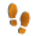

| Dot icons | ||
|---|---|---|
| dot_advlab | ||
| dot_black | ||
| dot_event | ||
| dot_found | ||
| dot_found_offline | ||
| dot_multi | ||
| dot_specialgc | NEW | |
| dot_not_found_offline | NEW | |
| dot_marker_calendar | NEW | |
| dot_note_offline | NEW | |
| dot_marker_archive_offline | NEW | |
| dot_marker_maintenance_offline | NEW | |
| dot_marker_usermodifiedcoords | NEW | |
| dot_mystery | ||
| dot_traditional | ||
| dot_unknown | ||
| dot_disabled | NEW | |
| dot_virtual | ||
| dot_waypoint_flag | ||
| dot_waypoint_stage | NEW | |
| dot_waypoint_pkg | ||
| dot_waypoint_reference | REPLACE BY dot_waypoint_waypoint | |
| dot_waypoint_waypoint | NEW | |
| dot_waypoint_puzzle | NEW | |
| dot_waypoint_trailhead | NEW | |
| dot_waypoint | REMOVE | |
| Markers | ||
|---|---|---|
| marker_archive | ||
| marker_calendar | ||
| marker_found_offline | ||
| marker_found | ||
| marker_maintenance | ||
| marker_not_found_offline | ||
| marker_note | ||
| marker_own | ||
| marker_owner_maintenance | ||
| marker_personalnote | ||
| marker_unknown_offline | ||
| marker_usermodifiedcoords | ||
| marker_stored | ||
| Types | |||
|---|---|---|---|
| type_advlab | Light blue works great as a reference to the official Lab app, but the contrast against white is quite low and it's breaking out of the color scheme (using 700 colors for bg). Light blue + orange marker is closest to the official, but again breaking out of monochrome scheme. Flask as a reference to the old Labs or Ballon as a reference to the current Lab app icon works better imho. | ||
| type_ape | |
||
| type_cgeo | |
||
| type_cito | I prefer to stay with a monochrome color scheme, so while the green/blue icon matches GC and the current icon better I'd prefer the white-only version | ||
| type_earth | |
||
| type_event | |
||
| type_specialevent | NEW | ||
| type_locationless | NEW | ||
| type_giga | |||
| type_hq | |||
| type_maze | NEW | ||
| type_letterbox | |||
| type_mega | |||
| type_multi | |||
| type_mystery | |
||
| type_traditional | |||
| type_unknown | |||
| type_virtual | |
||
| type_webcam | |||
| type_wherigo | |
The bee is a reference to WhereYouGo, but to other users the "play" icon should be better | |
| Types disabled | ||
|---|---|---|
| type_advlab_disabled | NEW | |
| type_ape_disabled | NEW | |
| type_cgeo_disabled | NEW | |
| type_cito_disabled | NEW | |
| type_earth_disabled | NEW | |
| type_event_disabled | NEW | |
| type_specialevent_disabled | NEW | |
| type_locationless_disabled | NEW | |
| type_giga_disabled | NEW | |
| type_hq_disabled | NEW | |
| type_maze_disabled | NEW | |
| type_letterbox_disabled | NEW | |
| type_mega_disabled | NEW | |
| type_multi_disabled | NEW | |
| type_mystery_disabled | NEW | |
| type_traditional_disabled | NEW | |
| type_unknown_disabled | NEW | |
| type_virtual_disabled | NEW | |
| type_webcam_disabled | NEW | |
| type_wherigo_disabled | NEW | |
| Waypoints | ||
|---|---|---|
| waypoint_flag |  |
|
| waypoint_pkg |  |
|
| waypoint_puzzle |  |
|
| waypoint_stage |  | |
| waypoint_trailhead |  |
|
| waypoint_waypoint |  |
|
| Waypoints disabled | ||
|---|---|---|
| waypoint_flag_disabled | NEW | |
| waypoint_pkg_disabled | NEW | |
| waypoint_puzzle_disabled | NEW | |
| waypoint_stage_disabled | NEW | |
| waypoint_trailhead_disabled | NEW | |
| waypoint_waypoint_disabled | NEW | |
| Misc | ||
|---|---|---|
| marker_nopin | NEW | |
| marker_disabled_oc | ||
| marker_disabled_other | ||
| marker_disabled | ||
| marker_notreliable | ||
| marker_oc | ||
| marker_other | ||
| marker_transparent | ||
| marker | ||
| tick | ||
| compass_arrow_mini_black | ||
| compass_arrow_mini_white | ||
| type_overlay_archived | ||
| type_overlay_visited | NEW | |